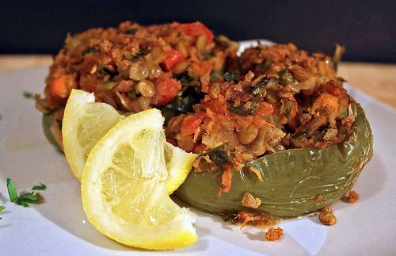
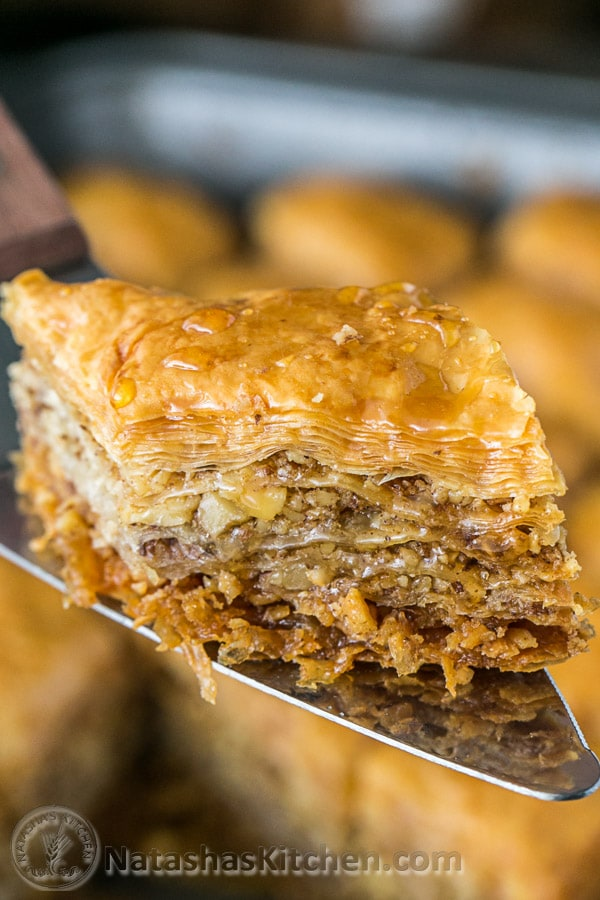
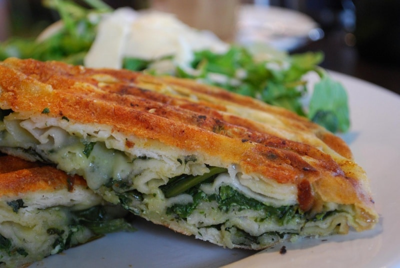

Flija could be considered a pie, however, mostly it is plain and is layered like a pack of pancakes (crepes). It is baked with cinders: the batter put on a pie-pan is covered with a “saç”- a metal dome over which hot cinders are placed to bake the dough.The saç (the lid) warmed on cinders, is put on the pie-pan which contains the layered batter of the flija. While you’re preparing the batter you’ll notice it looks much like pancake or crepes batter. After pouring each layer on the pie-pan you coat the layer with melted cream cheese and bake it individually under the saç. The process is long, but the results are delicious!

Speca Me Mish
Stuffed Bell Peppers
Ingredients
2 cups Jasmin or basmati rice
8-10 bell or shepherds peppers
2 tbsp dried mint
1 tsp paprika
1 small onion
Some cheese
Salt and pepper
1/2 lb lean ground beef
680ml tomato sauce
Directions
Cut the tops off the peppers. Remove and discard the stems, then finely chop the tops; set aside. Scoop out the seeds and as much of the membrane as you can. Place the peppers cut-side up in a baking dish just large enough to hold them upright.Fill the peppers with the rice mixture and top each with a sprinkle of the remaining 1/2 cup cheese. Pour a small amount of water into the bottom of the baking dish and drizzle the peppers with a little olive oil. Cover with foil and bake for 30 minutes. Uncover and bake until the peppers are soft and the cheese is melted and lightly browned, another 15 to 20 minutes.

Baklava
Most famous Baklava
Ingredients
1 (16 oz) pkg. phyllo dough, thawed according to package instructions
1 1/4 cups butter, melted
1 lb (about 4 cups) walnuts, finely chopped
1 teaspoon ground cinnamon
Syrup
1 cup granulated sugar
3/4 cup water
1/2 cup honey
2 tablespoons lemon juice
Directions
Set aside 3-4 tbsp of chopped pistachios for garnish. Combine the remaining chopped nuts in a mixing bowl. Add 1/4 cup of the sugar, cinnamon, and ground cloves. Stir to mix.
Preheat the oven to 350 degrees F.
Unroll phyllo and measure briefly against a 13 “x 9″ x 2” baking pan. Trim a little of the phyllo to better fit your baking dish.
Now spread the phyllo sheet on top of a damp towel, and cover with a second damp towel. This will help keep the phyllo dough from breaking while you work to assemble the baklava.
Lightly brush the baking dish with a bit of the melted butter. Take one sheet of phyllo and line the baking pan with it, fold in any excess. Brush the phyllo sheet with butter and gently press in the corners and sides of the baking pan.
Lay another phyllo sheet on top, brush with butter, and press into the pan as you have done with the first sheet. Lay another sheet on top, brush with butter, and press into the pan as before. Continue layering and buttering each phyllo sheet until you have used up 1/3 of the phyllo package. Distribute half of the nut mixture evenly over the top sheet.
Layer another 1/3 of the phyllo following the same process as before. Now distribute the remaining half of the nut mixture over the top layer.
Layer the remaining phyllo sheets following the same process as before.
If needed, trim off excess phyllo. Generously brush the very top layer of phyllo with butter.
With a knife, cut diagonal lines, 1/2 inch deep, in the phyllo to make out 1 1/2 inch diamond pieces. Do not press the knife all the way down.
Bake on a low rack for 45 mins to 1 hour, or until golden and a skewer inserted in the center comes out clean. IMPORTANT…Because ovens vary, be sure to check your baklava half way through baking.
While the baklava is baking, make the honey syrup. Place the sugar and water in a saucepan and heat stove-top, stirring occasionally, until sugar dissolves. Add the honey, orange extract, and whole cloves; stir to mix. Bring to a boil, then lower heat and let simmer for about 25 minutes. Remove syrup from heat and let cool to lukewarm. Add lemon juice. Remove the whole cloves.
When ready, remove the baklava from the oven and immediately pour the cooled honey syrup to cover the entire hot baklava. Let set to completely absorb the syrup.
A few hours later, cut the baklava carefully through the earlier marked pieces. Serve with a garnish of chopped pistachios.

Pite Me Spinaq
Pite With Spinach
Ingredients
Homemade Discs Filo Pastry
750g Spinach
2 Eggs
25g Feta Cheese
Olive Oil
220ml Water
Directions
In a large mixing bowl, with your hands mix together the spinach, eggs and crumble in the cheese.
By crunching your hands break up the spinach leafs ensuring all is covered with the egg and cheese.
Set to one side.Place a filo pastry disc in a large baking tray and add filling on top.
Add the second disc on top and seal the edges by tucking them down.Layer sheets of filo pastry on
top of each other brushing a layer of olive oil after each one before the next one is place down.
Once 6/8 sheet are laid add the filling on top.Repeat the layering until a further 6/8 sheets are
on top of the filling - olive oil brushed on each one.Put a thin layer of oil over the top.Bake in the oven
at 180 degrees for 1 hour or until golden brown.